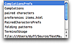
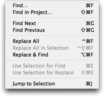
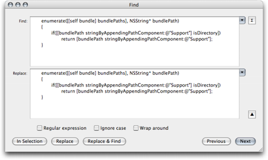
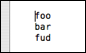
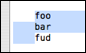
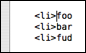
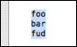
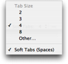

TextMate tries for the most part to mimic the behavior of the NSTextView system component, as used by applications such as Mail, Safari and basically all other Cocoa applications.
Some of the extra features related to text editing are covered in this section.
When writing structured text (like markup or source code) there are characters which go together in pairs. For example in a programming language you rarely type an opening brace ({) without also needing the closing brace (}).
To help you keep these characters balanced, TextMate will insert the appropriate closing character after the caret when you type the opening one. If you type the closing character TextMate is smart enough to overwrite the auto-inserted one. If you type an opening character and then delete it using backward delete (⌫) then the auto-inserted character will also be deleted. If you only want to delete the auto-inserted character, use forward delete instead (⌦).
It is also possible to wrap a selection in an open/close character by selecting text and typing the opening character. For example if you type foo, select it and type ( then TextMate will make it (foo) placing the caret after the ending parentheses.
The actual character pairs are defined in the bundle preferences with different settings for different languages and contexts. For example, in source code an apostrophe is set up to have itself as a closing character, except for comments and strings. This is achieved using scope selectors.
Two useful shortcuts in relation to auto-paired characters (defined as macros in the Source bundle and overridden for a few languages) are:
⌘↩
Move to the end of the line and insert a newline.
For example if you write:
print("foo
Then you will have ") to the right of the caret and can now use ⌘↩ to skip these two characters and insert a new line.
⇧⌘↩
Move to the end of the line, insert a ; and then insert a newline.
TextMate has a simple yet effective completion function on ⎋ (escape). It will complete the current word based on matches in the current document. If there are multiple matches, you can cycle through these by pressing ⎋ continuously. It is also possible to cycle backwards using ⇧⎋.
The matches are sorted by distance from the caret, meaning candidates which are closer to the caret will be suggested before candidates farther away.
Two possibilities exist for augmenting this default completion. Both are done via bundle preferences.
The first option is to provide a list of candidates which should always be suggested. For example the Objective-C bundle has a list of commonly used Cocoa framework methods. This is an array of the candidates, e.g.:
completions = ( 'retain', 'release', 'autorelease', 'description' );
The other option is to set a custom shell command to gather the completions. The shell command will have the TM_CURRENT_WORD environment variable available (as the word which needs to be completed) along with the other variables.
For example the C bundle has a custom completion command setup for when the caret is inside the preprocessor include directive, it looks like this:
completionCommand = 'find "$TM_DIRECTORY" \
-name "$TM_CURRENT_WORD*.h" -maxdepth 2 \
-exec basename "{}" \;|sort';
This will find as matches, any file in the current directory (and direct sub-directories) which have the current word as prefix and an .h extension.
When you provide your own completion command (or list) you may want to disable the default matches. This can be done by setting disableDefaultCompletion to 1.
Each time you copy or cut text, the text is pushed onto a stack.
By pressing ⌃⌥⌘V you will see the list of all previous clippings and can pick the one you want to paste using arrow keys. Use return to insert it and escape to dismiss the list. If you dismiss the list, the currently selected clipping will be what gets pasted the next time you use the paste function.

Instead of having to pick the clip from the list, you can use ⇧⌘V to paste the previous clip in the list. Using that key again will advance to the clip before that and so on. To go back you can use ⌥⌘V. These key equivalents are useful when you want to make multiple copies from one document and then paste these LIFO-style (Last In First Out) into another document (or another location in the same document).
When pasting text, TextMate will estimate the indent of the text pasted as well as the current indent level and adjust the pasted text so that it matches the current indent.
The estimates are done using the indentation rules mentioned in the Re-Indent Text section.
If you temporarily want to avoid this you can paste text using ⌃⌘V. You can also permanently disable re-indented pasting in the Text Editing part of the Preferences.
You can enable or disable freehanded editing in the Edit → Mode submenu (⌥⌘E).
With this mode enabled caret movement will not be restricted by line endings or tab stops.
This is useful when working with ASCII diagrams, when inserting something at a given column on several lines (and you do not want to insert the padding) and in a few other situations.
When making column selections freehanded mode is (temporarily) enabled, allowing you to make selections past the end of lines.
It is also possible to place the caret beyond the end of a line by single-clicking the mouse while holding down the option key (⌥).
By enabling overwrite mode in the Edit → Mode submenu (⌥⌘O) characters already in the document will be overwritten as you type rather than inserted as normal.
This is useful when working with column data, e.g.:
foo jaz
bar sub
fud dub
Imagine we want to overwrite some of the values in the first column. Somewhat similarly, we may have a line of a fixed width and want to replace part of it but preserve the width, for example we could have code like this where we must right-align the value to column 20 but want to overwrite the label:
printf("Value is %3d", 37).
In addition to the standard find dialog, TextMate has a Find submenu (located in the Edit menu) which gives you key equivalents for find and replace actions.

The find dialog uses normal system controls for accepting input. You can toggle between single line and multi line text controls using the arrow next to the Replace text field.

If you need to insert a newline or tab character into either of the text fields, you can hold down option (⌥) while pressing the tab (⇥) or return (↩) key. This will insert a literal tab or newline character.
Two useful key equivalents are ⌘E and ⌘G. The first copies the selection to the shared find clipboard. This works in the majority of applications and allows you to find the next occurrence of that string by then pressing ⌘G.
The find clipboard works across applications so whether in Safari, TextEdit, Mail, TextMate, Terminal, Console, or similar, one can copy the selected text to the find clipboard, switch application and use ⌘G to find that string.
In addition TextMate offers ⇧⌘E to copy the selection to the replace clipboard. This is often useful to save a trip to the find dialog, for example if you want to replace newlines with the pipe character (|) for a list of items, select a newline, press ⌘E to use that as the find string. Now type a |, select it and press ⇧⌘E so that it is copied to the replace clipboard.
The next step is then to either press ⌃⌘F to perform the replacement in the entire document, or select the range in which you want the replacement to occur and use ⌃⇧⌘F instead.
In the Text menu there is a Shift Left and Shift Right action bound to ⌘[ and ⌘]. These will increase and decrease the indent by the size of one tab.
On many european key layouts these keys are rather awkward, so in addition to these, you can also use ⌥⇥ and ⌥⇤ (where ⇤ is achieved using ⇧⇥).
If you want to move a line/block up/down a few lines or move a word/column selection, it can be done by holding down ⌃⌘ and using the arrow keys to move the selection around. It also works for moving lines up/down without a selection.
If you have code which has broken indent, you can select it and use Text → Indent Selection (without a selection it indents the current line).
The rules for estimating the indent are setup per-language using bundle preferences. For more details see the indentation rules section.
Selecting text is achieved by holding down ⇧ while using the normal movement keys. In addition the Edit → Select submenu has actions to select current word, line, paragraph, enclosing brackets and entire document.
Sometimes there is a need for adding a suffix to lines of variable length, or maybe editing the last part of these lines.
Although you can use find and replace for this, an easier way is to select the lines that needs to be edited, then use Text → Edit Each Line in Selection (⌥⌘A) and the caret will be placed at the end of the first line in the selection.
You can now type new text, delete text or go back and edit existing text and this will be mirrored down through all the (previously selected) lines. To leave this mode, simply move the caret away from the current line.
It is possible to select column data either by holding down ⌥ and making the selection with the mouse, or making a regular selection and then pressing ⌥ once (which toggles between the two types of selection).
You can use all the normal actions on a column selection e.g. move selection, replace in selection, transpose (lines), actions from the Text menu, filter the selection through a shell command, etc.
Using arrow up/down with ⌥ will move the caret to the first/last row in the current column. Hold down ⇧ to get it selected.

For example if you have column data as shown above with the caret in front of foo, press ⌥⇧↓ and it will move the caret down in front of fud and leave the text between foo and fud selected.

You may now either want to press ⌥ once to switch to a zero-width column selection, then start typing to type on each line.

Alternatively use ⌥⇧→ and then ⌥ to leave the entire column selected (in column mode).

When using the tab key at the beginning of a line, TextMate will insert as many tabs as it estimates to be correct for that line. If the line already has text the caret will move to the front of this text.
If the line already has the correct indent (or above) a single tab will be inserted.
TextMate supports the system wide 'Check Spelling as You Type'. This can be changed in the Edit → Spelling submenu.
You can bring up the context sensitive menu for a misspelled word to get spelling suggestions.
Since TextMate is intended for structured text it is possible to exclude parts of the document from being checked. This is done by creating a preferences item in the bundle editor, setting spellChecking to 0 and filling in the scope selector with the selector to target for no spell checking.
By default spell checking is disabled for source code except strings and comments and also for keywords, tags and similar in HTML, LaTeX, Markdown, etc.
TextMate can use spaces instead of tab characters. This is done by clicking the “Tab Size” pop-up in the status bar and enabling Soft Tabs.
This setting will only affect the current language and all languages with a common root that do not have the option set yet. The same applies to the state of spell checking, soft wrap and the actual tab size.

When soft tabs are enabled, TextMate will for the most part act exactly as if you were using hard tabs but the document does indeed contain spaces.